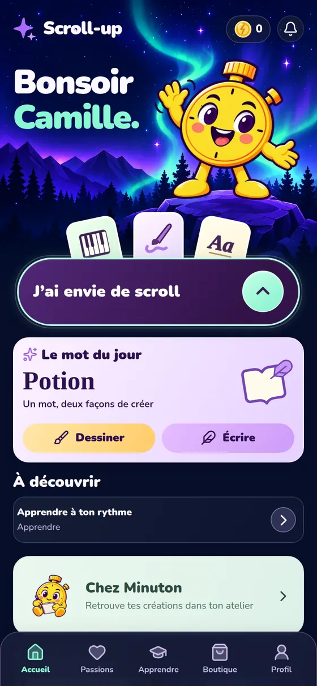
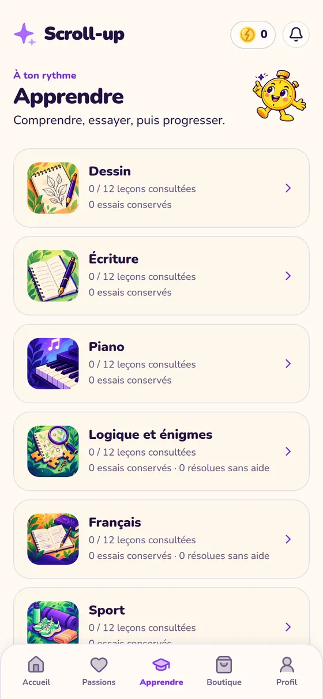
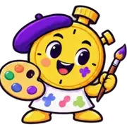
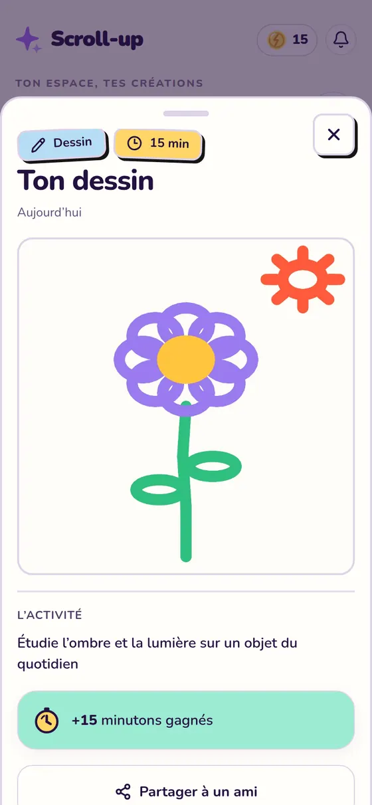
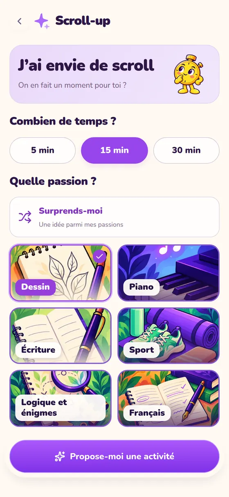
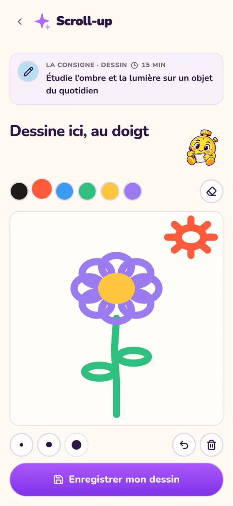
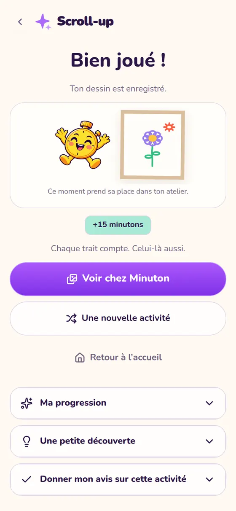
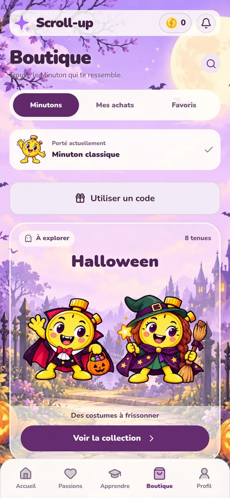

1 minute = 1 minuton
La monnaie de Scroll-up. Tu la gagnes en créant, jamais en regardant.
Gratuit · en test sur Telegram
Quand l’envie de scroller arrive, appuie sur un bouton. Minuton te propose 5, 15 ou 30 minutes pour dessiner, écrire, jouer du piano, bouger ou résoudre une énigme.

Ce dessin n’existait pas il y a 15 minutes.
Essaie, là, maintenant
Le même tirage que dans l’app, avec ses vraies activités.
Une idée pour toi
Dessine un personnage à partir de 3 mots que l’appli tire au hasard pour toi
Dans l’app, Minuton lance ton chrono, garde la consigne sous tes yeux et te donne un coup de pouce si tu bloques.
Comment ça marche
Ouvre Scroll-up et appuie sur « J’ai envie de scroll ». Choisis ton temps et ta passion, ou laisse Minuton te surprendre.
La consigne reste sous tes yeux. Dessine au doigt ou sur papier, écris, joue sur le clavier de l’écran. Une piste pour commencer si tu bloques.
Ta création rejoint ton atelier, rangée par passion. Tu vois enfin ce que ton temps a produit.
Une minute de création, un minuton. Tu montes de niveau dans chaque passion et tu habilles Minuton dans la boutique.
Six passions
Touche une carte pour voir une activité et les cinq niveaux à gagner.
Apprendre
Douze leçons par passion pour comprendre, essayer, puis progresser. Au piano, l’app part de zéro si tu n’as jamais joué : trouver les notes, poser la main, ton premier air.

Ce que tu y gagnes
La monnaie de Scroll-up. Tu la gagnes en créant, jamais en regardant.
Des tenues à débloquer avec tes minutons, et des collections comme Halloween.

Artiste40Ton niveau monte avec le temps passé à créer. Exemple en dessin :
Chaque création y prend sa place, et tu choisis celle à mettre à l’honneur.

Fais le calcul
Réglé sur la moyenne des 15-24 ans qui vont sur les réseaux chaque jour1.
40 jours entiers par an
Rends-en juste minutes par jour :
Le test est ouvert
Telegram est une messagerie gratuite. Installe-la, crée ton compte avec ton numéro, puis reviens sur cette page.
Sur Android, sans Telegram : tu peux aussi installer la version de test directement.
Télécharger l’app Android de testSur ordinateur ? Scanne avec ton téléphone : l’app est pensée pour lui.
Laisse ton e-mail : on te prévient à la sortie sur l’App Store et Google Play. Rien d’autre.
La liste d’attente ouvre très bientôt.
Oui. Pendant le test, tout est gratuit et il n’y a pas de publicité.
Pour tester sans rien installer de plus : Scroll-up s’ouvre comme une app, directement dans Telegram, sur téléphone comme sur ordinateur. Les versions App Store et Google Play viendront ensuite.
Non. Scroll-up utilise ton compte Telegram : tu ouvres l’app et tu commences.
Non. Scroll-up n’interdit rien et ne te fait pas la morale. Il te propose mieux au moment où l’envie arrive, et c’est toi qui choisis.
Non. Tu peux dessiner au doigt dans l’app ou sur papier, le piano se joue sur l’écran et le sport se fait sans matériel. Chaque activité dit ce qu’il te faut.
Oui. Tu indiques ton niveau, et au piano l’app part de zéro si tu n’as jamais joué. Les activités sont courtes et faites pour être réussies.
Un petit rappel par jour au maximum, à l’heure que tu choisis. Tu peux aussi choisir « Pas de notification ». Écrire /stop au bot coupe les relances.
Elles restent privées, dans ton atelier. Tu peux tout effacer à tout moment depuis les réglages de l’app. Le détail est dans la politique de confidentialité.
Écris directement au bot sur Telegram, ou utilise « Donner mon avis » à la fin d’une activité. Pendant le test, chaque message est lu.
Scroll-up est ouvert à partir de 15 ans.



